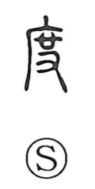

度

Uncategorized
Kun: tabi | On: do, to, taku
degree ・ measure ・ times ・ regulation
Explanation
Shirakawa interprets 度 as a compound formed from an abbreviated 席 and 又, the hand. It depicts hands spreading out a straw mat, using the mat’s breadth as a yardstick. From this image come the senses of measuring and the standard or measure itself. Because a mat is laid from end to end, the meaning extends to spanning or crossing a space and, further, to exceeding. From the idea of a fixed standard it also develops the sense of rule or regulation, as seen in compounds like hatto (法度) and seido (制度). As a count of occurrences, it is used for “times,” as in sando, “three times.”